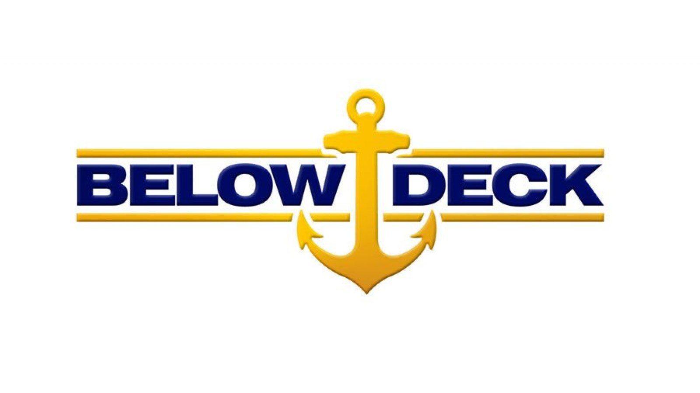

The Real Houswives franchise documents the lives of affluent women across multiple cities. There have been a total of 9 cities with a Real Housewives show. Seven are currently still being filmed. The first city filmed for the show was Orange County, which premiered in 2006. Multiple spin-off shows have been created from this franchise, and there are even international versions.
The Below Deck franchise documents the lives of the crew members that work on the mega-yachts that cater to the rich and famous. Each season features new workers to follow with some returning cast members. There are three shows within the franchise: Below Deck, Below Deck Meditteranean, and Below Deck Sailing Yacht. All three shows are still filming.
The "friend style" shows are different from the other main shows in that they follow a group of people who were friends before filming began. The main shows that follow this format are Vanderpump Rules, Shahs of Sunset, and Summer House. Each of these shows are still filming.
The Bravo community keeps growing and new podcasts pop up all the time. Here's a short list of popular podcasts within the community: